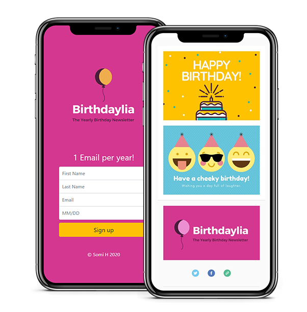
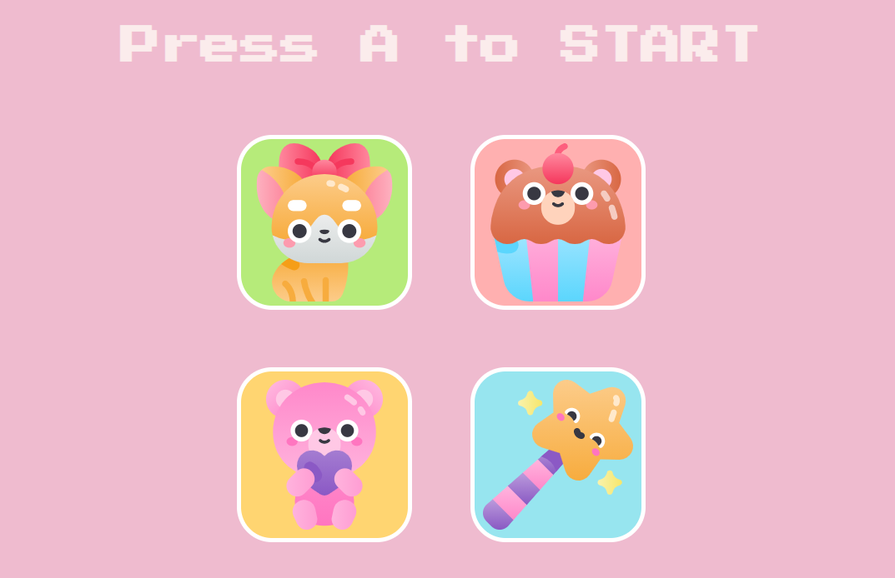
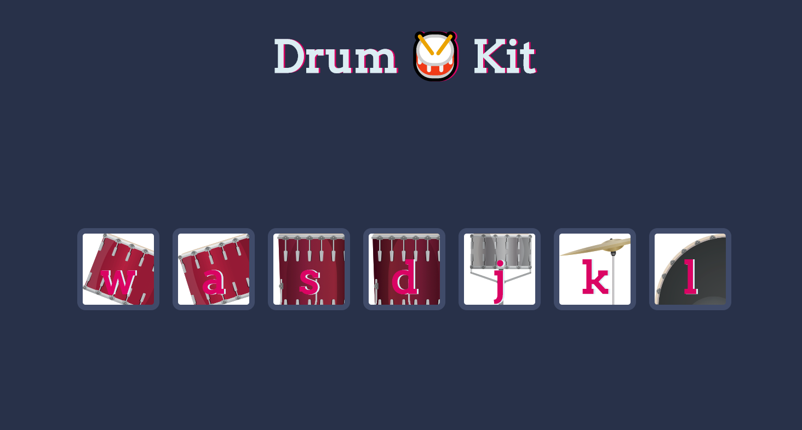
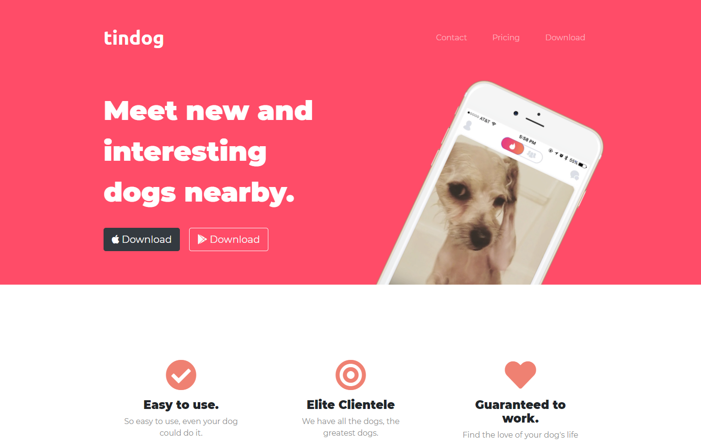

I'm currently looking for a remote work opportunity in the design field. I have a home office and extensive remote work experience.
Additionally, I have 10+ years of experience creating social media content, blogs, designs for print, website flows, web design, static web pages, ads, newsletters and
other marketing content, logos, vector graphics, video editing & more.
I am currently in the progress of updating this site, so please feel free to make some recent work sample requests. Thank you for your time and consideration.
This is a static website where the only purpose is to sign up for a birthday newsletter. The content lies in the center in both the desktop and mobile version. Considering how the users would interact with the web app, the layout was kept simple and utilitarian. To sign up, the user would simply fill out the short form and click or tap the "Sign Up" button. This would lead them to a success message. Should it fail for any reason, there is also an error message asking them to try again later. To view the Birthdaylia web app, you can click here. 
This is a very simple, yet very cute audio/visual memory online game that I created as my "game" project. It is one of my favorite projects because I got to implement a lot of cute illustrations into the final version. The mobile friendly update has not been developed yet, but you can view it and play on a desktop here.
This is a drum-kit game that I built during a bootcamp course I completed. Each instrument gets activated by tapping on the corresponding letter on the keyboard. Clicking also activates the instrument's sound file. If you'd like to mess around with the drum-kit set, you can do so here.

This is a static website that was built during a bootcamp course I completed. It follows the layout of many other static startup sites on the internet.
Some of the things that had to be considered were the choice of color in relation to the brand, clear message, noticeable call to action, ease of use/flow of the site, and mobile friendly design.
This startup mock site has empty links because "Tindog" does not exist, but it could easily be edited to represent any brand or product with live links. Please view the demo
here.
